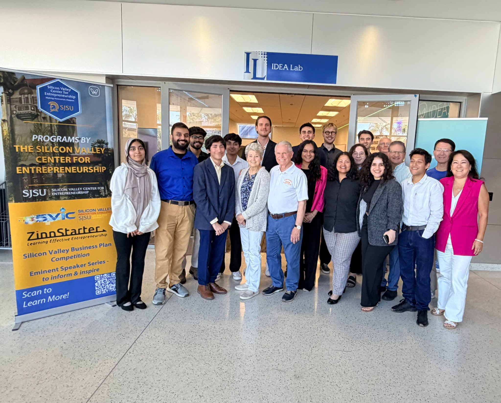

A structured, mentor-guided accelerator designed to take student startups from raw idea to investor-ready pitch.
ZinnStarter is a student startup accelerator run by the Silicon Valley Center for Entrepreneurship (SVCE) at San Jose State University. It was founded and is funded by Ray Zinn, the former CEO of Micrel Semiconductor and one of Silicon Valley's longest-serving CEOs of a publicly traded company.
The program selects approximately ten student-led startup teams per year and runs them through a semester-long cohort experience. Teams receive seed funding, a dedicated mentor, structured curriculum sessions, and the opportunity to pitch at a formal final showcase — attended in person by Ray Zinn.
Any SJSU student can apply, at any stage of their startup. We consider passion, how thoroughly teams have thought through their idea, quality of background research, presentation skills, and overall team commitment.
Dr. Anuradha Basu
Program Director, Silicon Valley Center for Entrepreneurship, SJSU
Sriram Sridhar
sriram.sridhar@sjsu.edu
Include "ZinnStarter" in your subject line
Keep an eye out — application dates and deadlines for the Fall 2026 semester will be posted here and on the official program page soon.
sjsu.edu/svce/programs/zinnstarter.php ↗
A semester-long cohort with a clear structure so you always know what to expect.
Sessions meet once every two weeks throughout the semester. The hybrid format mixes in-person and Zoom meetings. Attendance is required — it is a condition of receiving your funding.
Every team is matched with a mentor from the Silicon Valley business community. Your mentor works with you one-on-one throughout the program, guiding strategy, feedback, and preparation.
Teams that fulfill all program requirements receive up to $2,000 in seed funding. The cohort distributes up to $20,000 total across approximately ten teams.
Throughout the program, teams upload required deliverables tied to each session topic. These keep you on track and serve as building blocks toward your final presentation.
Participation in a business plan competition is required as part of the program. This is a real external milestone that pushes teams to sharpen their thinking before the final showcase.
The program culminates in a formal pitch showcase. Business formal attire is required — this matters to Ray Zinn personally. He attends every year and meets with each graduating team.
Each session builds on the last, guiding your team from a clear problem statement all the way to a polished, investor-ready presentation.
Define the real problem your startup is solving and articulate it clearly.
Describe your solution, how it works, and why it is the right approach.
Understand your market size, competitive landscape, and key trends.
Identify who your customers are, what they need, and how to reach them.
Map out how you will acquire customers and grow your user base.
Define how your company makes money and what your unit economics look like.
Practice delivering a compelling, concise pitch in 90 seconds.
Build and present a full-length investor deck at the final showcase.

"Entrepreneurial discipline turns hurdles into exciting challenges, and no hurdle appears too high."
— Ray Zinn, Founder of ZinnStarterThe Final Showcase requires business formal attire. This is important to Ray Zinn personally and reflects the professionalism expected of ZinnStarter graduates.
ZinnStarter is open to SJSU student teams at any stage. Here is what you need to know before applying:
Reach out to Sriram at sriram.sridhar@sjsu.edu with "ZinnStarter" in the subject. Exceptional circumstances are always considered.
Selection goes through applications, interviews, and a final decision. We evaluate teams on:
Genuine belief in the problem you are solving and commitment to seeing it through.
How thoroughly you have thought through your idea, including what might go wrong.
Evidence that you have studied your market, competitors, and customers.
Clear, confident communication — we evaluate how well you can tell your startup's story.
Cohesive, dedicated team that will fully engage with the program requirements.
Acceptance into ZinnStarter does not automatically result in funding. To receive your grant of up to $2,000, every team member must fulfill all five requirements:
Full attendance is expected. Exceptions may be made for genuine special circumstances — communicate early with the program manager.
Each session has associated deliverables. Submit them by the stated deadline.
Every team must enter and participate in an approved business plan competition during the program.
Your honest feedback helps improve the program for future cohorts.
Each team records a short video testimonial at the end of the program. These are shared directly with Ray Zinn.
Visit the official SJSU program page for current application deadlines and to submit your application.
Apply on the SJSU Website